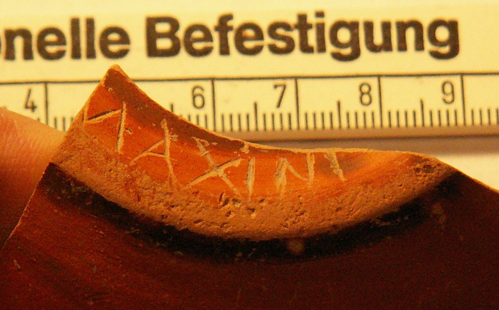

pompelo-033-maxini
Grafito nominal «Maxini o M. Axini» (Pompelo, Plaza del Castillo, Pamplona, Navarra)
Pompelo (Pamplona, Navarra), Hispania citerior · fin s. II-III d.C.

Texto
Otras lecturas posibles
- M(- - -)Axini
Comentario
La lectura es clara y no permite otra interpretación, ya que los autores creen que la N no podría leerse como M en ningún caso. No han encontrado ningún paralelo a Maxinus y entienden que lo más probable es que se trate de una forma incorrecta del cognomen Maximus. No se conocía ningún personaje con el cognomen Maximus en la epigrafía navarra hasta este momento, a excepción de las referencias a la familia imperial. Por otro lado, la inscripción también podría leerse como M() Axini, referente a un Marcus Axinus, pero no existe ningún paralelo al nombre Axinus, sí al de Axianus. Otra posibilidad remota llevaría a pensar en la utilización de la X en sustitución de la S, de manera que podría tratarse de un Marco Asinio.
Descripción
- Soporte
- Fragmento de fondo de 7 cm de Ø de una forma de cerámica de mesa barnizada, posiblemente un cuenco. Pasta dura de buena calidad y barniz anaranjado uniforme con línea gris en el fondo.
- Disposición
- Localización del grafito: Base.
- Datación
- fin s. II-III d.C.
- Lugar de origen
- Pompelo (Pamplona, Navarra), Hispania citerior
- Hallazgo
- Excavación de la Plaza del Castillo de Pamplona (Gabinete Arqueológico Trama, 2001-2003), sector 3. Los estratos están revueltos (abundan las tumbas musulmanas del sector 3): la datación se basa en las formas cerámicas y el contexto es el de un barrio artesano.
- Ubicación actual
- Almacén de Arqueología del Gobierno de Navarra
Bibliografía
- M. Unzu; P. Ozcáriz Gil, «Grafitos nominales de la Plaza del Castillo de Pamplona», Los vascones de las fuentes antiguas: en torno a una etnia de la antigüedad peninsular (2009), pp. 499-512.